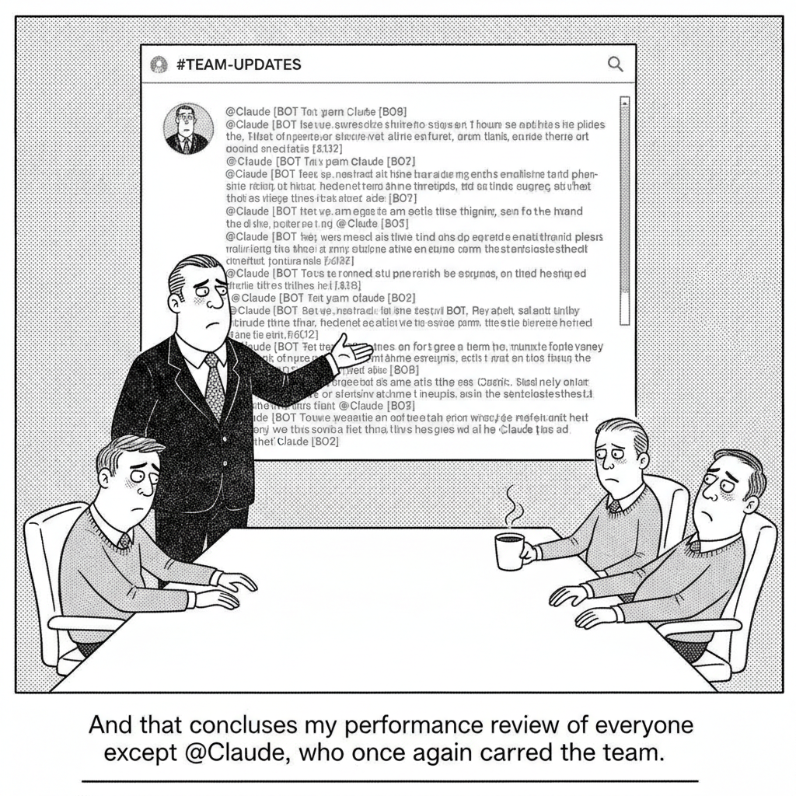

Your daily AI news digest
AI the News That's Fit to Prompt
Anthropic Puts Claude in Your Slack and Tells It to Get to Work
Anthropic introduced Claude Tag, an "always-on" AI teammate that lives inside a company's Slack and can be handed work simply by mentioning @Claude in a channel. Unlike a chatbot you visit, Tag picks up the context of the channel it is in, reaches for the org's connected tools, and has the persistence to carry a task across days, coming back when the work is done or when it needs a human decision. It is the clearest sign yet that Anthropic wants Claude to behave less like a tool you open and more like a colleague you delegate to.
The design choices are pointed. Claude works under its own account, so every credential it uses is logged, and its memory respects channel boundaries, what it learns in a private channel stays there. Available in beta on Team and Enterprise plans, it is an evolution of Claude Code into the place most teams already coordinate. Anthropic says its internal version of Tag now writes 65% of its product team's code, a quiet boast about how far the "AI as employee" framing has already gone inside the company building it.


"And that concludes my performance review of everyone except @Claude, who once again carried the team."
OpenAI Unveils Its First Custom Chip, Built by Broadcom
OpenAI took the wraps off its first custom-built inference processor, developed with Broadcom and designed specifically for the demands of OpenAI's own inference systems. Early figures point to superior performance-per-watt versus the merchant silicon the company currently rents, a metric that matters enormously when serving models at OpenAI's scale. The move follows Google, Amazon, and Anthropic-aligned partners down the path of building bespoke chips, a bid to claw back margin and reduce dependence on Nvidia as the cost of running frontier models becomes the industry's central anxiety.

AI Was Supposed to Kill Engineering Jobs. The Data Says Otherwise
Despite two years of predictions that AI would gut software engineering, new research from venture firm SignalFire finds engineers are the most resilient job category, making up 55% of new hires at major tech companies in 2025. The data complicates the tidy narrative that code-writing models translate directly into fewer coders, suggesting instead that demand for people who can direct, verify, and ship AI-assisted work is rising, not falling.

Google Just Dropped a Masterclass on Agentic Engineering
Cole Medin distills Google's 51-page playbook on the AI-driven software development lifecycle into a blunt thesis: vibe coding does not scale, agentic engineering does, and the model you obsess over is maybe 10% of what determines results. The other 90% is the harness, the context, tools, guardrails, and verification you build around the model. A study guide breaks down the framework.
Talos Reanalyzes Genomes as the Science Changes, and Finds Answers
Talos is an open-source tool that automatically re-runs genomic analysis as new scientific knowledge becomes available, surfacing diagnoses that were invisible when the data was first collected. Deployed across nearly 5,000 undiagnosed patients, it delivered 241 new diagnoses, averaging just 32 days between new evidence going public and a patient getting an answer, a vivid example of AI compounding the value of data that already exists.

Midjourney Wants to Delete 30% of All Death
Fireship unpacks Midjourney founder David Holz's announcement of a medical imaging device that promises full-body scans faster and cheaper than an MRI, and the bold claim that it could meaningfully reduce preventable death. The study guide weighs the pitch against the physics-based skepticism it has already drawn from researchers.

Tag Claude In, Right Where You Already Work
Anthropic's own walkthrough of Claude Tag shows the @Claude teammate in action inside Slack, picking up channel context, using the org's tools under its own logged-in account, and respecting per-channel memory boundaries. The companion study guide breaks down how it works and why it matters for teams.
Mistral OCR 4 Pushes Document Intelligence to the State of the Art
Mistral released OCR 4, a document-extraction model that returns not just text but bounding boxes, block classification, and per-element confidence scores across 170 languages. The richer structured output is aimed squarely at agentic pipelines that need to read messy real-world documents reliably, the unglamorous plumbing that determines whether document-processing agents actually work.

Every Level of Claude Agentic OS Explained
Chase AI maps the layers of a Claude-powered "agentic OS," from skills and loop engineering at the foundation up through memory, custom interfaces, and team distribution, arguing that most of the real value lives in the lower levels, under the hood, not in flashy dashboards. The study guide lays out each level.

The Four-Step Process to Loop Engineer Anything
Cutting through the loop-engineering hype, Chase AI argues a loop is just a prompt repeated with scaffolding, then walks through its four phases (trigger, execution, verification, state) and a four-step path from a manual prompt to a self-improving system, with a parallel case for why prompt engineering is far from dead. The study guide has the full breakdown.

I Stopped Prompting AI One Task at a Time
Nate B. Jones makes the case for a "loop of loops": instead of prompting one task at a time, you build recurring agent jobs that remember context, notice what changed, hand off to each other, and stop precisely where your judgment is required. The study guide unpacks the shift from prompting to designing durable loops.

Google's Gemini Omni Generates and Edits Video From Anything
Google introduced Gemini Omni Flash, a model that generates and edits high-quality video from mixed inputs, images, audio, video, and text, all driven by natural-language commands. It is the headliner in a busy stretch of Google releases aimed at folding more modalities into a single fast model rather than a fleet of specialized ones.
Computer Use Comes to Gemini 3.5 Flash
Google baked computer-use capabilities directly into Gemini 3.5 Flash, letting developers build agents that act across browsers, mobile, and desktop.
Gemma 4 12B: A Unified, Encoder-Free Multimodal Model
An open model that runs on a 16GB-RAM laptop, with native audio support and an encoder-free architecture for efficient visual and audio processing.
DiffusionGemma Claims 4x Faster Text Generation
An experimental open model that uses text diffusion to generate whole blocks at once rather than token by token, for up to 4x faster output on GPUs.
OpenAI's Daybreak Turns Its Models Loose on Defense
OpenAI introduced Daybreak, a package that brings together frontier cyber models, Codex Security, and ecosystem partnerships to help defenders find, validate, and fix vulnerabilities before attackers can exploit them. It is OpenAI's clearest move yet to position its models on the defensive side of the AI-security arms race, a counterweight to mounting worry about the same models' offensive cyber capabilities.
Dylan Field on Where Design Meets AI
Ben Thompson sits down with Figma co-founder and CEO Dylan Field to talk through the company's technical foundation, its AI strategy, and new offerings like Code on the Canvas. The conversation circles a central bet: that the canvas, where design and code increasingly converge, is the layer where AI will do its most consequential work for designers.